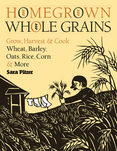

STOREY PUBLISHING
“Homegrown Whole Grains” will tell you how to convert part of your yard into a productive and beautiful field of grains, including barley, buckwheat, oats, wheat, rice, quinoa and more.